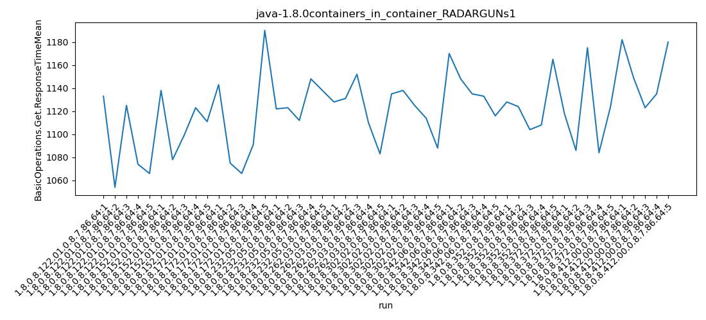
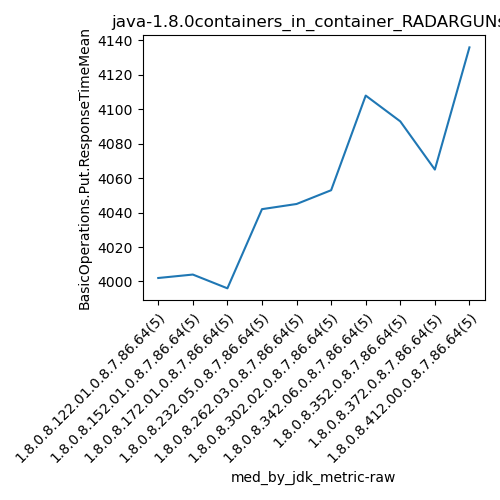

java-1.8.0 RADARGUNs1
Context at bottom
/home/jvanek/git/benchmarks-in-nested-virtualisation-toolchain/final_results/containers_in_container_results/containers_in_container_DACAPO
java-1.8.0
RADARGUNs1
/home/jvanek/git/benchmarks-in-nested-virtualisation-toolchain/final_results/containers_in_container_results/containers_in_container_JMH
java-1.8.0
RADARGUNs1
/home/jvanek/git/benchmarks-in-nested-virtualisation-toolchain/final_results/containers_in_container_results/containers_in_container_SPECJBB
java-1.8.0
RADARGUNs1
/home/jvanek/git/benchmarks-in-nested-virtualisation-toolchain/final_results/containers_in_container_results/containers_in_container_RADARGUNs1
java-1.8.0
RADARGUNs1
containers_in_container_RADARGUNs1
- containers_in_container_RADARGUNs1 - throughput get
- containers_in_container_RADARGUNs1 - throughput put
- containers_in_container_RADARGUNs1 - response mean time get
- containers_in_container_RADARGUNs1 - response mean time put
containers_in_container_RADARGUNs1 - throughput get
Expected number of java-1.8.0 JDKs: 10
1st avgmed_alljdks_metric:
/home/jvanek/git/benchmarks-in-nested-virtualisation-toolchain/final_results/result_processing.py /home/jvanek/git/benchmarks-in-nested-virtualisation-toolchain/final_results/containers_in_container_results/containers_in_container_RADARGUNs1 BasicOperations.Get.Throughput= False
values: [3145826, 2697254, 3220052, 2766708, 2783345, 3057132, 2976261, 3034213, 2957624, 2730899, 2793294, 3190813, 3295606, 2934383, 2691672, 3125312, 3225754, 3253470, 3111970, 3244578, 3227696, 3208492, 3203428, 3070257, 2945178, 3264015, 3258521, 3252568, 3159428, 3277086, 3096350, 3133905, 2972586, 3296719, 2827026, 3238251, 3121820, 3014850, 3274031, 2977002, 3252979, 3269891, 3078060, 3295332, 3214198, 2828669, 3176762, 3113671, 3264525, 3183322]

Expected number of iterations: 5
final number of values: 50 out of 50
Pass rate: 100.0%
values: (2691672, 3296719, 3094655.68, 3145826)

** accuracy from all jdks and runs
more is better
MIN: 2691672
MAX: 3296719
AVG: 3094655.68
MED: 3145826
Relative differences 1:
MIN-MAX: 18.0 %
MIN-AVG: 13.0 %
MIN-MED: 14.0 %
MAX-MIN: -22.0 %
MAX-AVG: -7.0 %
MAX-MED: -5.0 %
AVG-MED: 2.0 %
stored to java-1.8.0.properties. sort | uniq that!
2nd avgmed_by_jdk_metric:
values: [2922637.0, 2951225.8, 2981153.6, 3192216.8, 3131010.2, 3242323.6, 3065317.2, 3125190.8, 3222092.0, 3113389.8]

values: [2783345, 2976261, 2934383, 3225754, 3203428, 3258521, 3096350, 3121820, 3252979, 3176762]

values: (2922637.0, 3242323.6, 3094655.68, 3125190.8)
values: (2783345, 3258521, 3102960.3, 3176762)

** accuracy from all jdks where runs were avged
more is better
MIN: 2922637.0
MAX: 3242323.6
AVG: 3094655.68
MED: 3125190.8
Relative differences 1:
MIN-MAX: 10.0 %
MIN-AVG: 6.0 %
MIN-MED: 6.0 %
MAX-MIN: -11.0 %
MAX-AVG: -5.0 %
MAX-MED: -4.0 %
AVG-MED: 1.0 %
stored to java-1.8.0.properties. sort | uniq that!
** accuracy from all jdks where runs were medianed
more is better
MIN: 2783345
MAX: 3258521
AVG: 3102960.3
MED: 3176762
Relative differences 1:
MIN-MAX: 15.0 %
MIN-AVG: 10.0 %
MIN-MED: 12.0 %
MAX-MIN: -17.0 %
MAX-AVG: -5.0 %
MAX-MED: -3.0 %
AVG-MED: 2.0 %
stored to java-1.8.0.properties. sort | uniq that!
containers_in_container_RADARGUNs1 - throughput put
Expected number of java-1.8.0 JDKs: 10
1st avgmed_alljdks_metric:
/home/jvanek/git/benchmarks-in-nested-virtualisation-toolchain/final_results/result_processing.py /home/jvanek/git/benchmarks-in-nested-virtualisation-toolchain/final_results/containers_in_container_results/containers_in_container_RADARGUNs1 BasicOperations.Put.Throughput= False
values: [786501, 674257, 805087, 691684, 695902, 764276, 744036, 758629, 739395, 682718, 698329, 797656, 823859, 733620, 672844, 781360, 806465, 813424, 777980, 811164, 806961, 802123, 800822, 767560, 736304, 816005, 814689, 813029, 789930, 819269, 774072, 783449, 743159, 824080, 706756, 809522, 780472, 753740, 818488, 744264, 813236, 817516, 769583, 823814, 803430, 707176, 794195, 778469, 816199, 795848]

Expected number of iterations: 5
final number of values: 50 out of 50
Pass rate: 100.0%
values: (672844, 824080, 773666.92, 786501)

** accuracy from all jdks and runs
more is better
MIN: 672844
MAX: 824080
AVG: 773666.92
MED: 786501
Relative differences 1:
MIN-MAX: 18.0 %
MIN-AVG: 13.0 %
MIN-MED: 14.0 %
MAX-MIN: -22.0 %
MAX-AVG: -7.0 %
MAX-MED: -5.0 %
AVG-MED: 2.0 %
stored to java-1.8.0.properties. sort | uniq that!
2nd avgmed_by_jdk_metric:
values: [730686.2, 737810.8, 745261.6, 798078.6, 782754.0, 810584.4, 766303.2, 781297.2, 805515.8, 778377.4]

values: [695902, 744036, 733620, 806465, 800822, 814689, 774072, 780472, 813236, 794195]

values: (730686.2, 810584.4, 773666.92, 781297.2)
values: (695902, 814689, 775750.9, 794195)

** accuracy from all jdks where runs were avged
more is better
MIN: 730686.2
MAX: 810584.4
AVG: 773666.92
MED: 781297.2
Relative differences 1:
MIN-MAX: 10.0 %
MIN-AVG: 6.0 %
MIN-MED: 6.0 %
MAX-MIN: -11.0 %
MAX-AVG: -5.0 %
MAX-MED: -4.0 %
AVG-MED: 1.0 %
stored to java-1.8.0.properties. sort | uniq that!
** accuracy from all jdks where runs were medianed
more is better
MIN: 695902
MAX: 814689
AVG: 775750.9
MED: 794195
Relative differences 1:
MIN-MAX: 15.0 %
MIN-AVG: 10.0 %
MIN-MED: 12.0 %
MAX-MIN: -17.0 %
MAX-AVG: -5.0 %
MAX-MED: -3.0 %
AVG-MED: 2.0 %
stored to java-1.8.0.properties. sort | uniq that!
containers_in_container_RADARGUNs1 - response mean time get
Expected number of java-1.8.0 JDKs: 10
1st avgmed_alljdks_metric:
/home/jvanek/git/benchmarks-in-nested-virtualisation-toolchain/final_results/result_processing.py /home/jvanek/git/benchmarks-in-nested-virtualisation-toolchain/final_results/containers_in_container_results/containers_in_container_RADARGUNs1 BasicOperations.Get.ResponseTimeMean True
values: [1133, 1054, 1125, 1074, 1066, 1138, 1078, 1099, 1123, 1111, 1143, 1075, 1066, 1091, 1190, 1122, 1123, 1112, 1148, 1138, 1128, 1131, 1152, 1110, 1083, 1135, 1138, 1125, 1114, 1088, 1170, 1148, 1135, 1133, 1116, 1128, 1124, 1104, 1108, 1165, 1118, 1086, 1175, 1084, 1124, 1182, 1149, 1123, 1135, 1180]

Expected number of iterations: 5
final number of values: 50 out of 50
Pass rate: 100.0%
values: (1054, 1190, 1122.0, 1124)

** accuracy from all jdks and runs
more is worse
MIN: 1190
MAX: 1054
AVG: 1122.0
MED: 1124
Relative differences 1:
MIN-MAX: 13.0 %
MIN-AVG: 6.0 %
MIN-MED: 6.0 %
MAX-MIN: -11.0 %
MAX-AVG: -6.0 %
MAX-MED: -6.0 %
AVG-MED: -0.0 %
stored to java-1.8.0.properties. sort | uniq that!
2nd avgmed_by_jdk_metric:
values: [1090.4, 1109.8, 1113.0, 1128.6, 1120.8, 1120.0, 1140.4, 1125.8, 1117.4, 1153.8]

values: [1074, 1111, 1091, 1123, 1128, 1125, 1135, 1124, 1118, 1149]

values: (1090.4, 1153.8, 1122.0, 1120.8)
values: (1074, 1149, 1117.8, 1124)

** accuracy from all jdks where runs were avged
more is worse
MIN: 1153.8
MAX: 1090.4
AVG: 1122.0
MED: 1120.8
Relative differences 1:
MIN-MAX: 6.0 %
MIN-AVG: 3.0 %
MIN-MED: 3.0 %
MAX-MIN: -5.0 %
MAX-AVG: -3.0 %
MAX-MED: -3.0 %
AVG-MED: 0.0 %
stored to java-1.8.0.properties. sort | uniq that!
** accuracy from all jdks where runs were medianed
more is worse
MIN: 1149
MAX: 1074
AVG: 1117.8
MED: 1124
Relative differences 1:
MIN-MAX: 7.0 %
MIN-AVG: 3.0 %
MIN-MED: 2.0 %
MAX-MIN: -7.0 %
MAX-AVG: -4.0 %
MAX-MED: -4.0 %
AVG-MED: -1.0 %
stored to java-1.8.0.properties. sort | uniq that!
containers_in_container_RADARGUNs1 - response mean time put
Expected number of java-1.8.0 JDKs: 10
1st avgmed_alljdks_metric:
/home/jvanek/git/benchmarks-in-nested-virtualisation-toolchain/final_results/result_processing.py /home/jvanek/git/benchmarks-in-nested-virtualisation-toolchain/final_results/containers_in_container_results/containers_in_container_RADARGUNs1 BasicOperations.Put.ResponseTimeMean True
values: [4002, 3986, 4057, 3835, 4032, 4004, 3973, 3989, 4077, 4104, 4113, 4102, 3981, 3853, 3996, 3981, 4042, 3952, 4182, 4067, 3952, 4172, 4095, 4045, 3868, 4036, 4053, 4141, 4020, 4122, 4385, 4163, 4108, 4056, 4068, 4085, 4114, 4153, 4008, 4093, 4047, 4065, 4086, 4051, 4160, 4103, 4191, 4136, 4129, 4216]

Expected number of iterations: 5
final number of values: 50 out of 50
Pass rate: 100.0%
values: (3835, 4385, 4064.98, 4067)

** accuracy from all jdks and runs
more is worse
MIN: 4385
MAX: 3835
AVG: 4064.98
MED: 4067
Relative differences 1:
MIN-MAX: 14.0 %
MIN-AVG: 8.0 %
MIN-MED: 8.0 %
MAX-MIN: -13.0 %
MAX-AVG: -6.0 %
MAX-MED: -6.0 %
AVG-MED: -0.0 %
stored to java-1.8.0.properties. sort | uniq that!
2nd avgmed_by_jdk_metric:
values: [3982.4, 4029.4, 4009.0, 4044.8, 4026.4, 4074.4, 4156.0, 4090.6, 4081.8, 4155.0]

values: [4002, 4004, 3996, 4042, 4045, 4053, 4108, 4093, 4065, 4136]

values: (3982.4, 4156.0, 4064.9800000000005, 4074.4)
values: (3996, 4136, 4054.4, 4053)

** accuracy from all jdks where runs were avged
more is worse
MIN: 4156.0
MAX: 3982.4
AVG: 4064.9800000000005
MED: 4074.4
Relative differences 1:
MIN-MAX: 4.0 %
MIN-AVG: 2.0 %
MIN-MED: 2.0 %
MAX-MIN: -4.0 %
MAX-AVG: -2.0 %
MAX-MED: -2.0 %
AVG-MED: -0.0 %
stored to java-1.8.0.properties. sort | uniq that!
** accuracy from all jdks where runs were medianed
more is worse
MIN: 4136
MAX: 3996
AVG: 4054.4
MED: 4053
Relative differences 1:
MIN-MAX: 4.0 %
MIN-AVG: 2.0 %
MIN-MED: 2.0 %
MAX-MIN: -3.0 %
MAX-AVG: -1.0 %
MAX-MED: -1.0 %
AVG-MED: 0.0 %
stored to java-1.8.0.properties. sort | uniq that!
/home/jvanek/git/benchmarks-in-nested-virtualisation-toolchain/final_results/containers_in_container_results/containers_in_container_J2DBENCH
java-1.8.0
RADARGUNs1
/home/jvanek/git/benchmarks-in-nested-virtualisation-toolchain/final_results/containers_in_container_results/containers_in_container_RADARGUNs3
java-1.8.0
RADARGUNs1
pass rates:
containers_in_container_RADARGUNs1=100.0%
Context:
- containers_in_container_results
- RADARGUNs1